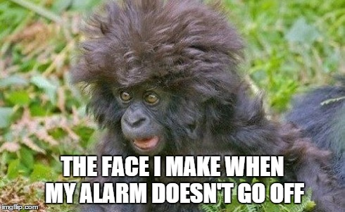
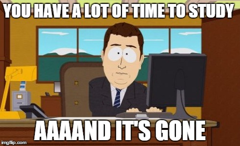
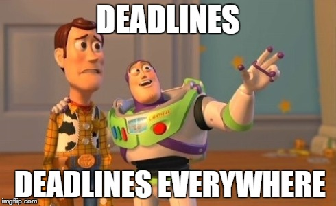
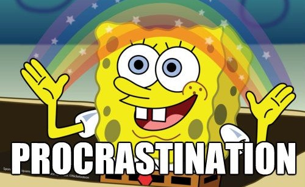

How to Make a 4.0 GPA at SFA

“Make college your bitch” - Albert Einstein
Written by Piero Pretto, HemiNotes founder
When I arrived at SFA my freshmen year, I rocked hair down to my shoulders and a Sesame Street elmo hat. Total scrub.
But I did do some things right. I went out every weekend and met virtually every organization on campus. I stepped out of my comfort zone. I also studied well. By the time finals came around, I could have failed them all and walked away with a 3.5 GPA (I didn’t of course.) If you’re a freshmen at SFA or simply a student who wants to make great grades without sacrificing the best years of your life, here’s a few tips I lived by:
1) Go out every weekend.
Please party. Don’t be the kid who’s stuck in their dorm all day. Get out and meet people. I stress this for the sake of time management. You need to allocate a time where you can get all the funk out of your system. Dedicate this time to weekends and not weekdays.
2) If you skip class once, you’ll do it again.

I made the mistake of skipping class once my freshmen year. The worst part about it was nothing bad happened. So I skipped again. Same result. This habit carried over to my sophomore year, thinking I could squeeze every syllabus out of excused absences and minor lectures. Boy, was I wrong. My GPA plummeted as I missed vital assignments and announcements that would cost me later down the road. Please don’t make the same mistake I made. Go to class.
3) Track your study speed with a stopwatch.

This has been by far the most rewarding study tip I can give anyone. This usually cuts my study time in half. When taking notes over a chapter, track how many pages you can cover over a 10 minute time frame. Then see if you can cover a few more pages in the next 10 minutes. The reason this hack works so well for me is that it forces me to stay focused. It’s like tracking your run time when you’re jogging.
4) Plan your day out before the professor opens his mouth.

You know that 2 minute window between showing up to class and your professor starting his lecture? Take that time to plan your day. Buy a great calendar with 30-minute time slots and plan the next couple of hours. Take every following class to review or plan out more of your week. It’s a lazy man’s way to stay on top of your schedule.
5) Break up all your projects into small digestible chunks.

This tip I stole from my mom who went to SFA. Do not write “write essay” on your to-do list. Write “write half a page of rhetoric essay” each day leading up to the due date.
Good luck this semester.
About HemiNotes:
HemiNotes was designed to help SFA students share and compare class notes online. Learn more »
Back »